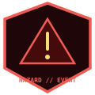

One maintained offline archive of the public wiki. The same file — 01_Somnarak_Wiki.zip at the repository root — is overwritten whenever the encyclopedia is updated. No versioned extra zips.
FULL WIKI
7.36 MB (.ZIP)
01_SOMNARAK_WIKI.ZIP
The complete standalone offline static encyclopedia: HTML articles, CSS, search engine, maps, and vector art. This is the only wiki zip; it is replaced in place on every wiki update.

LORE CORPUS
13.6 MB (.ZIP)
FOR_WIKI_SOURCE_CORPUS.ZIP
The complete uncompressed salvaged lore corpus (2,140 markdown documents) covering Absolvohan, Echo-Core dossiers, campaign storylines, and incident chronicles.